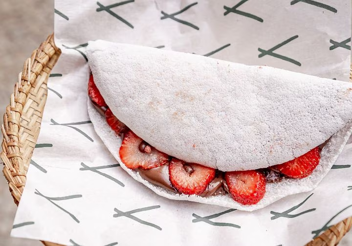

A gastronomia do Nordeste do Brasil é rica e diversificada, com influências indígenas, africanas e portuguesas. A região é conhecida por seus pratos saborosos, aromáticos e apimentados.
Algumas iguarias típicas da culinária nordestina incluem:
1 - Feijoada - prato com feijão-preto e carne de porco, geralmente acompanhado de arroz, farofa e couve.
2 - Acarajé - bolinho frito feito com massa de feijão-fradinho, recheado com vatapá, camarão seco, pimenta e outras especiarias. recde arroz, farofa e couve.
3 - Moqueca - prato de peixe cozido em um molho de tomate, cebola, pimentão, leite de coco e coentro.
4 - Baião de dois - prato feito com arroz e feijão de corda, geralmente com carne seca, linguiça, queijo coalho e temperos.
5 - Carne de sol - carne de boi seca e salgada, geralmente servida com mandioca cozida e manteiga de garrafa.
6 - Tapioca - alimento feito com a goma de mandioca hidratada, geralmente recheado com queijo, coco ou doce de leite.
7 - Cuscuz - preparado com farinha de milho, geralmente servido com leite, manteiga e açúcar.
8 - Bobó de camarão - prato de camarão cozido em um molho de azeite de dendê, leite de coco, cebola, pimentão e tomate.
Esses são apenas alguns exemplos da rica gastronomia do Nordeste do Brasil. Há muitos outros pratos e sabores para descobrir e experimentar na região.
